Chapter 5 Legend
The heatmaps and simple annotations automatically generate legends which are put one the right side of the heatmap. By default there is no legend for complex annotations, but they can be constructed and added manually. All legends are constructed by Legend() contructor. In later sections, we first introduce the settings for continuous legends and discrete legends, then we will discuss how to configure the legends associated with the heatmaps and annotations, and how to add new legends to the plot.
All the legends (no matter a single legend or a pack of legends) all belong to the Legends class. The class only has one slot grob which is the real grid::grob object or the grid::gTree object that records how to draw the graphics. The wrapping of the Legends class and the methods designed for the class make legends as single compacted objects and can be draw like points with specifying the positions of the legends.
5.1 Continuous legend
Since most of heatmaps contain continuous values, we first introduce the settings for continuous legend. Continuous legend needs a color mapping function which should be generated by circlize::colorRamp2(). In the heatmap legends and annotation legends that are automatically generated, the color mapping functions are passed by the col argument from Heatmap() or HeatmapAnnotation() function, while if you construct a separated legend, you need to provide the color mapping function.
The break values provides in the color mapping function (e.g. c(0, 0.5, 1)) will not exactly be the same as the break values in the legends). The finally break values presented in the legend are internally adjusted to make the numbers close to 5 or 6.
First we show the default style of a vertical continuous legend:
library(circlize)
col_fun = colorRamp2(c(0, 0.5, 1), c("blue", "white", "red"))
lgd = Legend(col_fun = col_fun, title = "foo")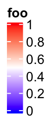
lgd is a Legends class object. The size of the legend can be obtained by width() and height() function.
width(lgd)## [1] 9.90409342447917mm# the three values are the height of the title, the gap between title and legend,
# and the height of the legend.
height(lgd)## [1] 2.52525499131945mm+1.5mm+24mmThe legend which is actually a packed graphic objects composed of rectangles, lines, text can be added by draw() function. In ComplexHeatmap pacakge, you don’t need to use draw() directly on legend objects, but it might be useful if you use the legend objects in other places.
# code only for demonstration
draw(lgd, x = , y = , just = )If you only want to configure the legends generated by heatmaps or annotations, you don’t need to construct the Legends object by your own, but the parameters introduced later can be used to customize the legends by heatmap_legend_param argument in Heatmap() and annotation_legend_param argument in HeatmapAnnotation(). It is still nice to see how these parameters change the styles of the legend in following examples.
In following examples, we only show how to construct the legend object, while not show the code which draws the legends. Only remember you can use draw() function on the Legends object to draw the single legend on the plot.
For continuous legend, you can manually adjust the break values in the legend by setting at. Note the height is automatically adjusted.
lgd = Legend(col_fun = col_fun, title = "foo", at = c(0, 0.25, 0.5, 0.75, 1))
The labels corresponding to the break values are set by labels.
lgd = Legend(col_fun = col_fun, title = "foo", at = c(0, 0.5, 1), labels = c("low", "median", "high"))
The height of the vertical continous legend is set by legend_height. legend_height can only be set for the veritcal continous legend and the value is the height of the legend body (exluding the legend title).
lgd = Legend(col_fun = col_fun, title = "foo", legend_height = unit(6, "cm"))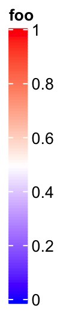
If it is a vertical legend, grid_width controls the widths of the legend body. grid_width is originally designed for the discrete legends where the each level in the legend is a grid, but here we use the same name for the parameter that controls the width of the legend.
lgd = Legend(col_fun = col_fun, title = "foo", grid_width = unit(1, "cm"))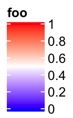
The graphic parameters for the labels are controlled by labels_gp.
lgd = Legend(col_fun = col_fun, title = "foo", labels_gp = gpar(col = "red", font = 3))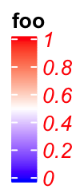
The border of the legend as well as the ticks for the break values are controlled by border. The value of border can be logical or a string of color.
lgd = Legend(col_fun = col_fun, title = "foo", border = "red")
title_position controls the position of titles. For vertical legends, the value should be one of topleft, topcenter, lefttop-rot and leftcenter-rot. Following two shows the effect of lefttop-rot title and leftcenter-rot title.
lgd = Legend(col_fun = col_fun, title = "foooooooo", title_position = "lefttop-rot",
legend_height = unit(4, "cm"))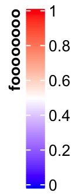
lgd = Legend(col_fun = col_fun, title = "foooooooo", title_position = "leftcenter-rot",
legend_height = unit(4, "cm"))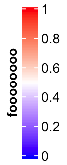
Settings for horizontal continuous legends are almost the same as vertical legends, except that now legend_width controls the width of the legend, and the title position can only be one of topcenter, topleft, lefttop and leftcenter.
The default style for horizontal legend:
lgd = Legend(col_fun = col_fun, title = "foo", direction = "horizontal")
Manually set at:
lgd = Legend(col_fun = col_fun, title = "foo", at = c(0, 0.25, 0.5, 0.75, 1),
direction = "horizontal")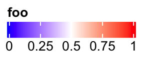
Manually set labels:
lgd = Legend(col_fun = col_fun, title = "foo", at = c(0, 0.5, 1),
labels = c("low", "median", "high"), direction = "horizontal")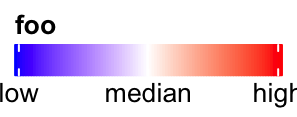
Set legend_width:
lgd = Legend(col_fun = col_fun, title = "foo", legend_width = unit(6, "cm"), direction = "horizontal")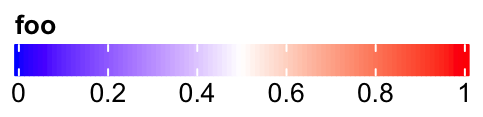
Set graphic parameters for labels:
lgd = Legend(col_fun = col_fun, title = "foo", labels_gp = gpar(col = "red", font = 3),
direction = "horizontal")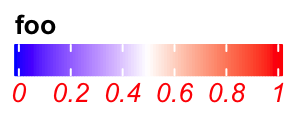
Title can be set as topleft, topcenter or lefttop and leftcenter.
lgd = Legend(col_fun = col_fun, title = "foooooooo", direction = "horizontal",
title_position = "topcenter")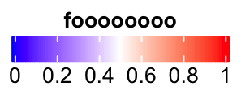
lgd = Legend(col_fun = col_fun, title = "foooooooo", direction = "horizontal",
title_position = "lefttop")
In examples we showed above, the intervals between every two break values are equal. Actually at can also be set as break values with uneuqal intervals. In this scenario, the ticks on the legend are still at the original places while the corresponding texts are shifted to get rid of overlapping. Then, there is lines linking the ticks and the texts.
lgd = Legend(col_fun = col_fun, title = "foo", at = c(0, 0.1, 0.15, 0.5, 0.9, 0.95, 1))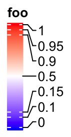
If the labels do not need to be adjusted, they are still at the original places and there will be no links.
lgd = Legend(col_fun = col_fun, title = "foo", at = c(0, 0.3, 1), legend_height = unit(4, "cm"))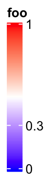
It is similar for the horizontal legends:
lgd = Legend(col_fun = col_fun, title = "foo", at = c(0, 0.1, 0.15, 0.5, 0.9, 0.95, 1),
direction = "horizontal")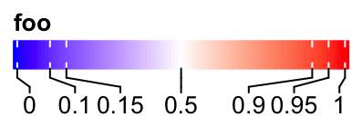
Set rotations of labels to 90 degree.
lgd = Legend(col_fun = col_fun, title = "foo", at = c(0, 0.1, 0.15, 0.5, 0.9, 0.95, 1),
direction = "horizontal", title_position = "lefttop", labels_rot = 90)
When the position of title is set to lefttop, the area below the title will also be taken into account of calculating the adjusted positions of labels.
lgd = Legend(col_fun = col_fun, title = "foo", at = c(0, 0.1, 0.5, 0.75, 1),
labels = c("mininal", "q10", "median", "q75", "maximal"),
direction = "horizontal", title_position = "lefttop")
5.2 Discrete legend
Discrete legends are used for discrete color mapping. The continuous color mapping can be degenerated as discrete color mapping by only providing the colors corresponding to the break values.
You can either specify at or labels, but most probably you specify labels. The colors should be specified by legend_gp.
lgd = Legend(at = 1:6, title = "foo", legend_gp = gpar(fill = 1:6))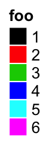
lgd = Legend(labels = month.name[1:6], title = "foo", legend_gp = gpar(fill = 1:6))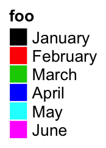
The position of title:
lgd = Legend(labels = month.name[1:6], title = "foo", legend_gp = gpar(fill = 1:6),
title_position = "lefttop")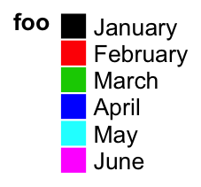
lgd = Legend(labels = month.name[1:6], title = "foo", legend_gp = gpar(fill = 1:6),
title_position = "leftcenter-rot")
The size of grids are controlled by grid_width and grid_height.
lgd = Legend(at = 1:6, legend_gp = gpar(fill = 1:6), title = "foo",
grid_height = unit(1, "cm"), grid_width = unit(5, "mm"))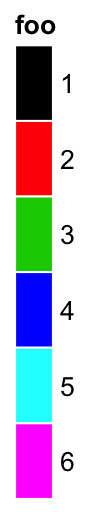
The graphic parameters of labels are controlled by labels_gp.
lgd = Legend(labels = month.name[1:6], legend_gp = gpar(fill = 1:6), title = "foo",
labels_gp = gpar(col = "red", fontsize = 14))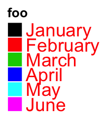
The graphic parameters of the title are controlled by title_gp.
lgd = Legend(labels = month.name[1:6], legend_gp = gpar(fill = 1:6), title = "foo",
title_gp = gpar(col = "red", fontsize = 14))
Borders of grids are controlled by border.
lgd = Legend(labels = month.name[1:6], legend_gp = gpar(fill = 1:6), title = "foo",
border = "red")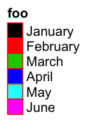
One important thing for the discrete legend is you can arrange the grids into multiple rows or/and columns. If ncol is set to a number, the grids are arranged into ncol columns.
lgd = Legend(labels = month.name[1:10], legend_gp = gpar(fill = 1:10), title = "foo", ncol = 3)
Still the title position is calculated based on the multiplt-column legend.
lgd = Legend(labels = month.name[1:10], legend_gp = gpar(fill = 1:10), title = "foo",
ncol = 3, title_position = "topcenter")You can choose to list the legend levels by rows by setting by_row = TRUE.
lgd = Legend(labels = month.name[1:10], legend_gp = gpar(fill = 1:10), title = "foo",
ncol = 3, by_row = TRUE)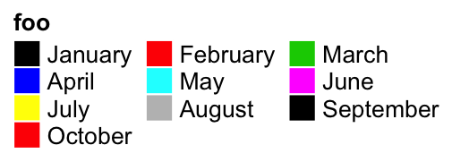
The gap between two columns are controlled by gap.
lgd = Legend(labels = month.name[1:10], legend_gp = gpar(fill = 1:10), title = "foo",
ncol = 3, gap = unit(1, "cm"))Instead of ncol, you can also specify the layout by nrow. Note you cannot use ncol and nrow at a same time.
lgd = Legend(labels = month.name[1:10], legend_gp = gpar(fill = 1:10), title = "foo", nrow = 3)
One extreme case is when all levels are put in one row and the title are rotated by 90 degree. The height of the legend will be the height of the rotated title.
lgd = Legend(labels = month.name[1:6], legend_gp = gpar(fill = 1:6), title = "foooooo",
nrow = 1, title_position = "lefttop-rot")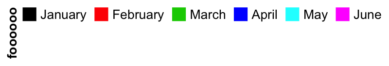
Following style a lot of people might like:
lgd = Legend(labels = month.name[1:6], legend_gp = gpar(fill = 1:6), title = "foooooo",
nrow = 1, title_position = "leftcenter")
Legend() also supports to use simple graphics (e.g. points, lines) as legends. type argument can be specified as points that you can use number for pch or single-letter for pch.
lgd = Legend(labels = month.name[1:6], title = "foo", type = "points",
pch = 1:6, legend_gp = gpar(col = 1:6), background = "#FF8080")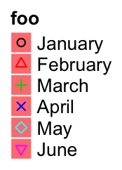
lgd = Legend(labels = month.name[1:6], title = "foo", type = "points",
pch = letters[1:6], legend_gp = gpar(col = 1:6), background = "white")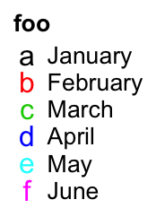
Or set type = "lines" to use lines as legend:
lgd = Legend(labels = month.name[1:6], title = "foo", type = "lines",
legend_gp = gpar(col = 1:6, lty = 1:6), grid_width = unit(1, "cm"))
5.3 A list of legends
A list of legends can also be constructed or packed as a Legends object where the individual legends are arranged in a certain layout. The legend list can be sent to packLegend() separatedly or as a list. The legend can be arranged either vertically or horizontally.
lgd1 = Legend(at = 1:6, legend_gp = gpar(fill = 1:6), title = "legend1")
lgd2 = Legend(col_fun = col_fun, title = "legend2", at = c(0, 0.25, 0.5, 0.75, 1))
lgd3 = Legend(labels = month.name[1:3], legend_gp = gpar(fill = 7:9), title = "legend3")
pd = packLegend(lgd1, lgd2, lgd3)
# which is same as
pd = packLegend(list = list(lgd1, lgd2, lgd3))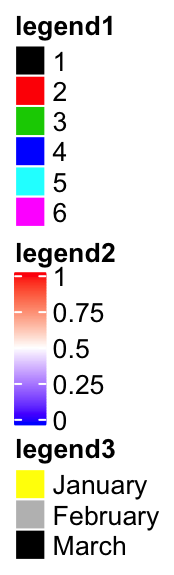
Simillar as single legend, you can draw the packed legends by draw() function. Also you can get the size of pd by width() and height().
width(pd)## [1] 19.1162787543403mmheight(pd)## [1] 72.0757649739583mmHorizontally arranging the legends simply by setting direction = "horizontal".
pd = packLegend(lgd1, lgd2, lgd3, direction = "horizontal")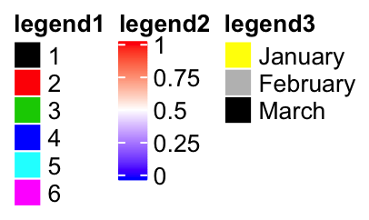
One feature of packLegend() is, e.g. if the packing is vertically and the sum of the packed legends exceeds the height specified by max_height, it will be rearragned as mutliple column layout. In following example, the maximum height is 10cm.
When all the legends are put into multiple columns, column_gap controls the space between two columns.
pd = packLegend(lgd1, lgd3, lgd2, lgd3, lgd2, lgd1, max_height = unit(10, "cm"), column_gap = unit(1, "cm"))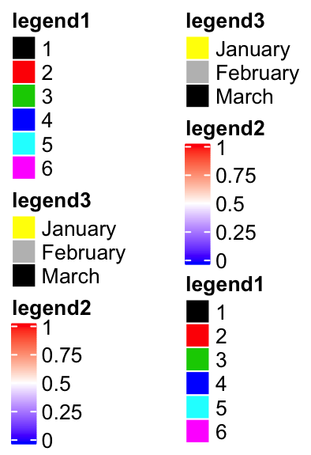
Similar for horizontal packing:
lgd1 = Legend(at = 1:6, legend_gp = gpar(fill = 1:6), title = "legend1",
nr = 1)
lgd2 = Legend(col_fun = col_fun, title = "legend2", at = c(0, 0.25, 0.5, 0.75, 1),
direction = "horizontal")
pd = packLegend(lgd1, lgd2, lgd3, lgd1, lgd2, lgd3, max_width = unit(10, "cm"),
direction = "horizontal", column_gap = unit(5, "mm"), row_gap = unit(1, "cm"))
5.4 Heatmap and annotation legends
m = matrix(rnorm(100), 10)
Heatmap(m, name = "foo", heatmap_legend_param = list(
at = c(-2, 0, 2),
labels = c("low", "zero", "high"),
title = "Some values",
legend_height = unit(4, "cm"),
title_position = "lefttop-rot"
))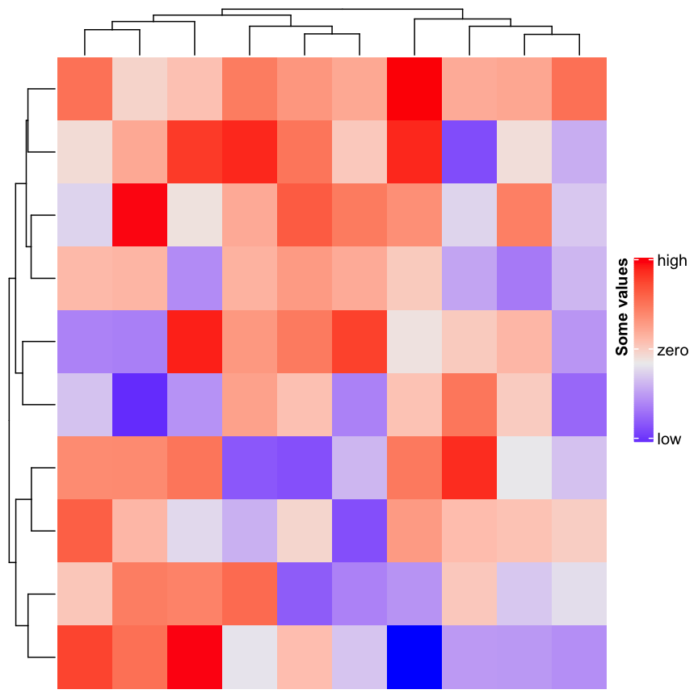
ha = HeatmapAnnotation(foo = runif(10), bar = sample(c("f", "m"), 10, replace = TRUE),
annotation_legend_param = list(
foo = list(
title = "Fooooooo",
at = c(0, 0.5, 1),
labels = c("zero", "median", "one")
),
bar = list(
title = "Baaaaaaar",
at = c("f", "m"),
labels = c("Female", "Male")
)
))ha = HeatmapAnnotation(foo = runif(10), bar = sample(c("f", "m"), 10, replace = TRUE))
Heatmap(m, name = "mat1", top_annotation = ha) +
Heatmap(m, name = "mat1", top_annotation = ha)## Warning in .local(object, ...): Heatmap/annotation names are duplicated:
## mat1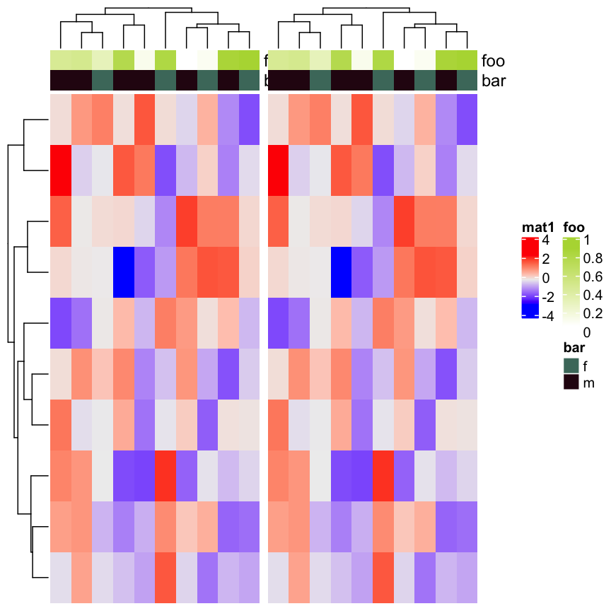
ha = HeatmapAnnotation(foo = runif(10),
bar = sample(c("f", "m"), 10, replace = TRUE),
show_legend = c(TRUE, FALSE),
annotation_name_side = "left")
Heatmap(m, name = "mat1", top_annotation = ha) +
Heatmap(m, name = "mat2", show_heatmap_legend = FALSE)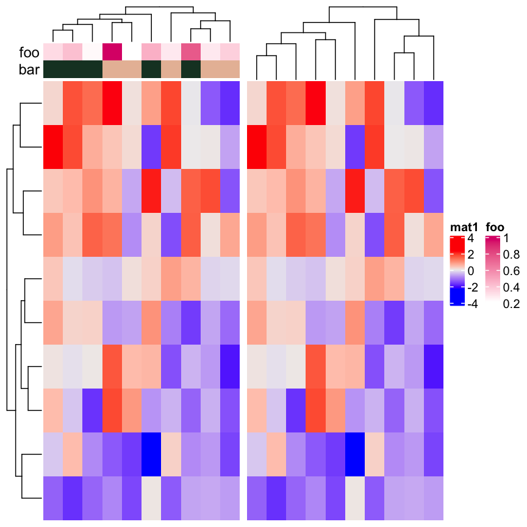
If heatmaps / annotations are added horizontally, heatmap legends and row annotations are put in one viewport and column annotations are put in another viewport
ha1 = HeatmapAnnotation(foo1 = runif(10),
bar1 = sample(c("f", "m"), 10, replace = TRUE))
ha2 = rowAnnotation(foo2 = runif(10),
bar2 = sample(letters[1:3], 10, replace = TRUE))
ha3 = rowAnnotation(foo3 = runif(10),
bar3 = sample(month.name[1:3], 10, replace = TRUE))
ht_list = Heatmap(m, name = "mat1", top_annotation = ha1) +
Heatmap(m, name = "mat2", left_annotation = ha2) +
ha3
draw(ht_list, heatmap_legend_side = "bottom", annotation_legend_side = "left")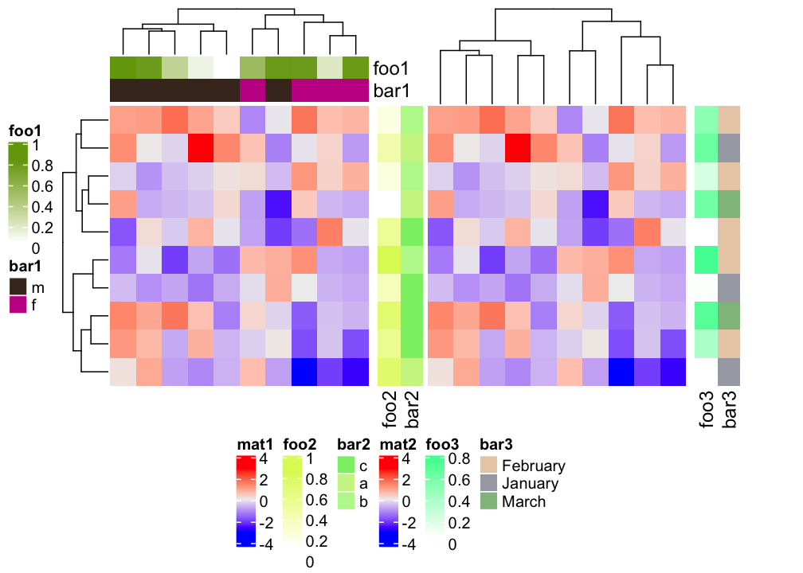
draw(ht_list, merge_legend = TRUE)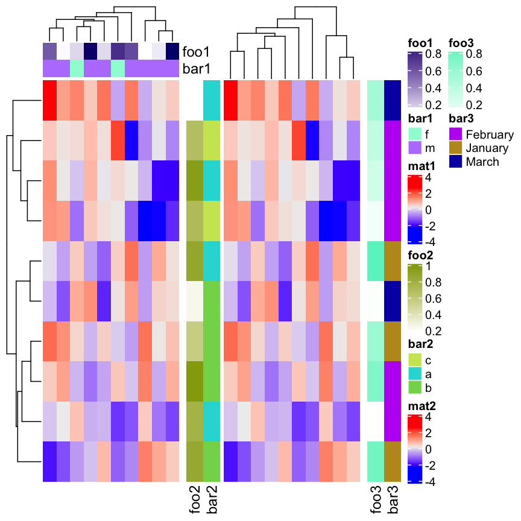